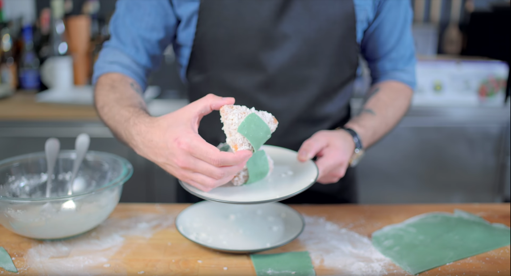

Brocks Jelly Donut
Brocks Jelly Donut as seen in the anime.

Real life recreation of the famous Jelly Donut.
What in the World Is It?
Brocks Jelly Donut, this is known as the most (in)famous food ever
to be featured in the Pokemon franchise. When offering Ash and Misty
some, Brock describes them: "These donuts are great. Jelly filled are
my favorite." It should be noted that the original food that is featured
is Onigiri however 4Kids dubbed the food to jelly donut to make it more
appealing with the western audience. This recipe will show how to make a sweet
donut variant originally done by Binging with Babish.
Ingredients
For Donut
- Whole Milk (1 Cup)
- Granulated Sugar (For yeast: 1 tsp)
- Active Dry Yeast (1 packet)
- All Purpose Flour (350g)
- White Sugar (75g)
- Table Salt (1 tsp)
- Additional Flour for Work Surface
- Vegetable Oil
- Additional Sugar (optional for coating)
Marzipan
- Almond Flour (100g)
- Powdered Sugar (150g)
- Corn Syrup
- Green and Black Food Coloring
- Water (2 tbsp)
Glaze
- Powdered Sugar (2 cups)
- Skim Milk (1/4 cup)
Other Ingredients
- Jelly
- Vegetable Oil
- Coconut Shavings
Recipe Instructions
- Start by heating some milk in a bowl to 110°F and then add 1 tsp of sugar along with 1 packet of active dry yeast. Stir to combine and set aside for 10 minutes.
- In a large bowl combine 350 grams of all purpose flour with 75 grams of white sugar, and 1 tsp of table salt. Whisk to combine.
- In the same bowl, add 3 large egg yolks and the milk and yeast mixture. Using a wooden spoon or your hands, mix dough together until it forms a large shaggy mass. Turn out onto a lightly floured surface and knead for about 8 minutes. Once dough is smooth, add to an oiled bowl, cover, and let sit for about an hour or until it’s doubled in size.
- While the dough is proofing, add 100g of almond flour to a food processor along with 150g of powdered sugar, 1 Tbsp of corn syrup and a little bit of green and black food coloring. Turn the food processor on and slowly add 2 Tbsp of water. Add more if needed.
- Knead until the color is uniform and then wrap and place in the fridge for 1 hour.
- Turn dough out onto a floured work surface, pat with a little bit of flour, and then roll out to about ½ inch thickness. Cut the dough into a large rectangle, and then cut the dough into triangles.
- Heat up vegetable oil in a cast iron skillet to 375°F.
- Add donuts to the oil and flip constantly while they cook. Once brown, remove from oil and place on a wire rack to let cool.
- Once cooled, use a paring knife make an entry point into the side of the donut and add your jelly with a piping bag. Once the jelly is added, coat the whole donut in glaze and then immediately place in a bowl with coconut shavings. Toss until fully coated.
- Roll out the marzipan into a very thin sheet and then cut into small rectangular strips. Add some glaze to the marzipan to help it stick to the donut, and then stick the marzipan to the donut.
- Serve and Enjoy!!!!